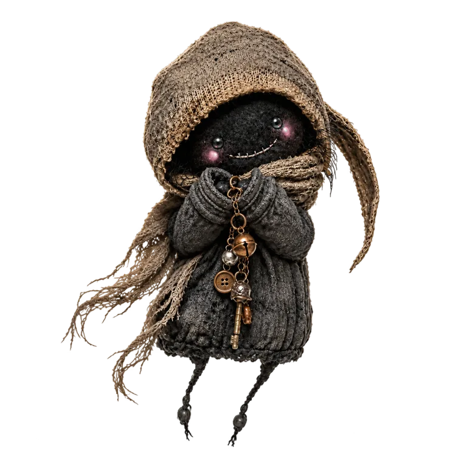

MUENBA · A LEDGER OF WHO'S STILL HIDING
むえんばMuenba
Fifteen foggy rooms. Five ghosts hiding.きりの へやが 15こ。ゴーストが 5たい かくれている。
MUENBA IS LOCKEDむえんばは今は閉じています。
Opening the ledger…記録をひらいています…

MUENBA · A LEDGER OF WHO'S STILL HIDING
Fifteen foggy rooms. Five ghosts hiding.きりの へやが 15こ。ゴーストが 5たい かくれている。